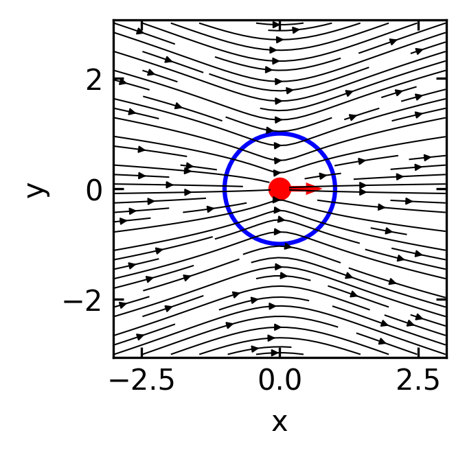
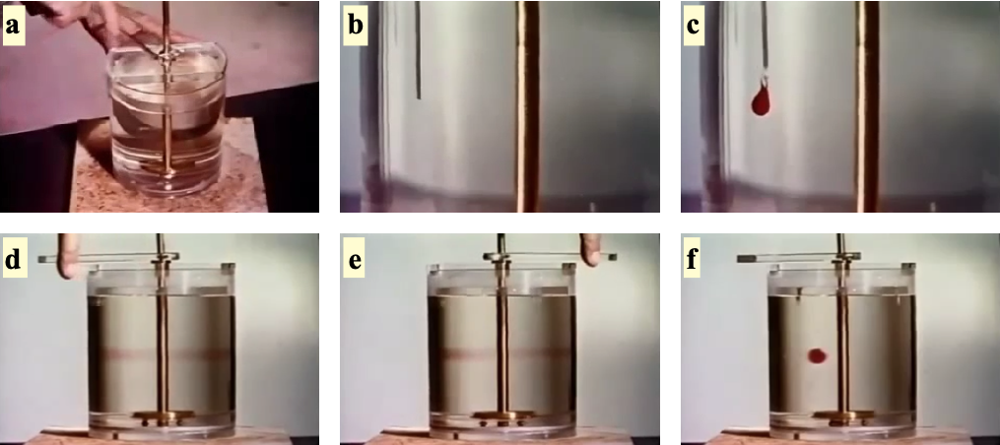
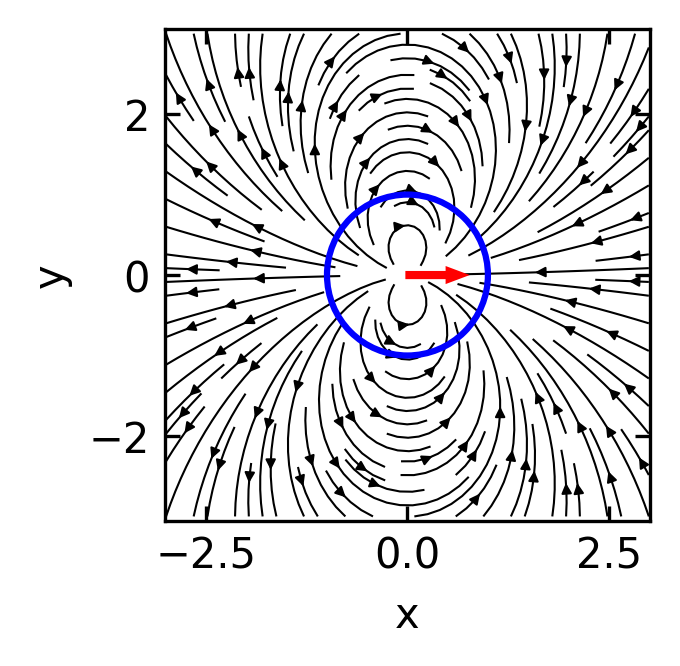
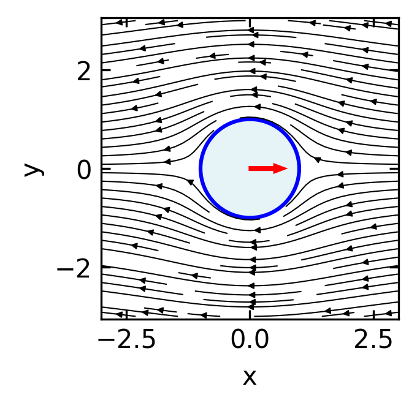
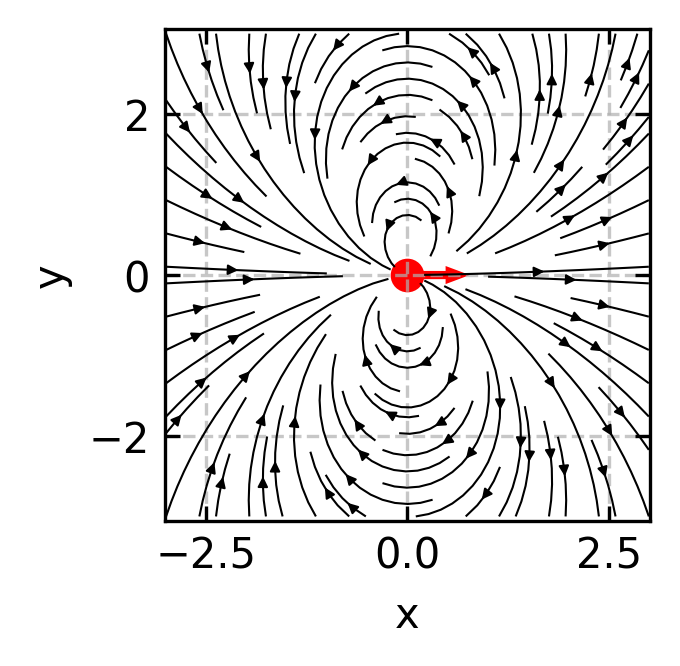
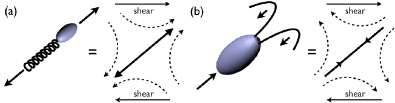
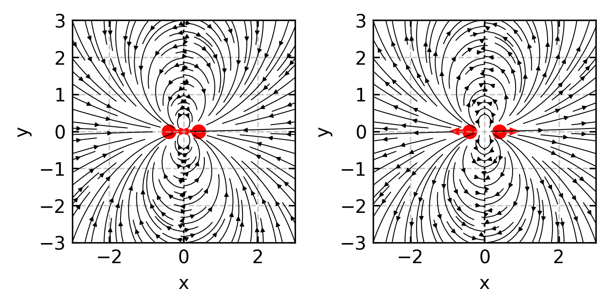
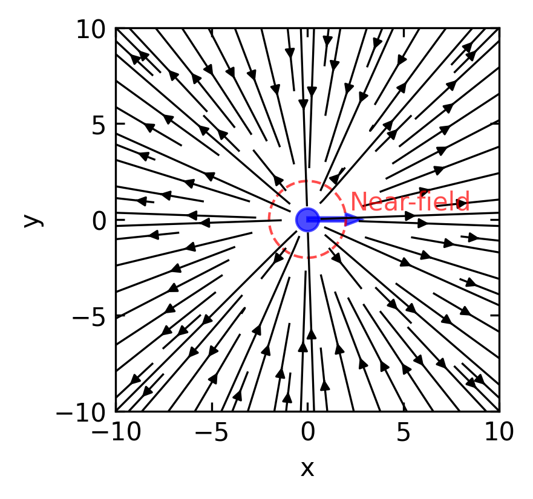
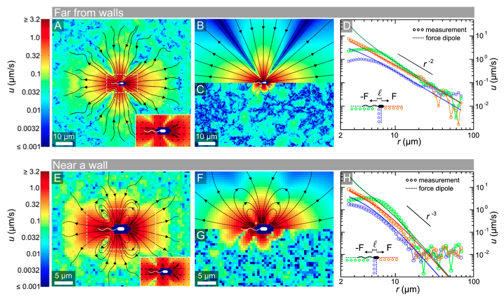

Ignoring fixed x limits to fulfill fixed data aspect with adjustable data limits.
Ignoring fixed y limits to fulfill fixed data aspect with adjustable data limits.
Microorganisms and synthetic microswimmers propel themselves in a liquid environment generally described by the Navier-Stokes equation, which governs fluid motion by balancing inertial forces with pressure gradients, viscous forces, and external forces:
\[\rho\left(\frac{\partial \mathbf{v}}{\partial t} + \mathbf{v} \cdot \nabla \mathbf{v}\right) = -\nabla p + \eta\nabla^2\mathbf{v} + \mathbf{f}\]
Here, \(\rho\) is fluid density, \(\mathbf{v}\) is velocity, \(p\) is pressure, \(\eta\) is dynamic viscosity, and \(\mathbf{f}\) represents external force density. Through dimensional analysis, we can determine the relative importance of the inertial (\(\rho\mathbf{v} \cdot \nabla \mathbf{v}\)) versus viscous (\(\eta\nabla^2\mathbf{v}\)) terms. If we scale length by \(L\), velocity by \(V\), and time by \(L/V\), the inertial term scales as \(\rho V^2/L\) while the viscous term scales as \(\eta V/L^2\). Their ratio yields the dimensionless Reynolds number:
\[Re = \frac{\rho v L}{\eta}\]
where \(\rho\) is the fluid density, \(v\) is the characteristic velocity, \(L\) is the characteristic length scale, and \(\eta\) is the fluid viscosity.
For a swimming bacterium like E. coli:
This gives \(Re \approx 3 \times 10^{-5}\), indicating that viscous forces overwhelmingly dominate inertial forces. This regime presents unique challenges for locomotion that are fundamentally different from our macroscopic experience.
At low Reynolds numbers, the inertial term in the Navier-Stokes equations can be dropped, leading to the simplified Stokes equations:
\[\eta \nabla^2 \mathbf{v} - \nabla p = 0\] \[\nabla \cdot \mathbf{v} = 0\]
where \(\mathbf{v}\) is the fluid velocity and \(p\) is the pressure. These equations are linear and time-independent, which is always nicely demonstrated in the experiment by G.I. Taylor

This time-reversibility is the origin of the “scallop theorem”.
The Scallop Theorem states that a microswimmer with a single degree of freedom cannot achieve net displacement in a Stokesian fluid (low Reynolds number). A scallop, which can only open and close its shell, represents such a mechanism with a single hinge. When the scallop opens slowly and closes rapidly in water, it generates thrust at the macroscale where inertia matters. However, at the microscale where viscous forces dominate, the time-reversibility of Stokes flow means the scallop would simply trace the same path backward and forward, resulting in no net movement regardless of how asymmetrically it times its opening and closing motions.

This theorem, formulated by Edward Purcell, can be understood as follows: if a swimmer changes its shape from A to B and then reverses this change from B to A along exactly the same path in configuration space, the net displacement will be zero. This is in stark contrast to swimming at high Reynolds numbers, where inertia allows for net displacement even with reciprocal motion.
To achieve net displacement at low Reynolds numbers, a swimmer must break time-reversibility. This can be done in several ways:


When microorganisms swim at low Reynolds numbers, they don’t just move themselves - they also generate flow fields in the surrounding fluid. These flow fields arise from the force-free swimming mechanisms we’ve explored and significantly influence how microswimmers interact with their environment and each other.
To understand how swimming generates flow fields, we need to examine fundamental solutions to the Stokes equations. A particularly instructive example comes from analyzing the flow field around a sphere moving through a fluid.
When a sphere of radius \(a\) moves through a fluid with velocity \(\mathbf{v}_p=\frac{\mathbf{F}}{6\pi\eta a}\), it generates a flow field given by:
\[\mathbf{u}(\mathbf{r}) = \frac{3a}{4r} \left( \mathbf{I} + \frac{\mathbf{r}\mathbf{r}}{r^2} \right) \cdot \mathbf{v}_p + \frac{a^3}{4r^3} \left( \mathbf{I} - 3\frac{\mathbf{r}\mathbf{r}}{r^2} \right) \mathbf{v}_p\]
The first term represents the Stokeslet (point force) contribution, which decays as \(1/r\). This term is related to the Oseen tensor, which is the fundamental solution to the Stokes equation for a point force acting on a fluid element. The Oseen tensor describes the resulting velocity field when an isolated force is applied to a fluid, assuming boundary conditions where the flow vanishes at infinity:
\[G_{ij}(\mathbf{r}) = \frac{1}{8\pi\eta}\left(\frac{\delta_{ij}}{r} + \frac{r_i r_j}{r^3}\right)\]
Therefore the flow field around a point force is given by
\[\mathbf{u}_{Stokeslet}(\mathbf{r}) = \frac{3a}{4r} \left( \mathbf{I} + \frac{\mathbf{r}\mathbf{r}}{r^2} \right) \cdot \mathbf{v}_p\]
which is plotted below.
Ignoring fixed x limits to fulfill fixed data aspect with adjustable data limits.
Ignoring fixed y limits to fulfill fixed data aspect with adjustable data limits.
This flow field obviously violates the hydrodynamic boundary condition at the sphere’s surface. The velocity at the spheres boundary should fulfill two conditions. i) There is no inflow or outflow at the boundary, and ii) the velocity at the boundary matches the sphere’s velocity \(\mathbf{v}_p\).
The second term in the above equation must therefore be responsible for the correction of the boundary conditions.
\[\mathbf{u}_{Sliplet}(\mathbf{r}) = \frac{a^3}{4r^3} \left( \mathbf{I} - 3\frac{\mathbf{r}\mathbf{r}}{r^2} \right) \mathbf{v}_p\]
Ignoring fixed x limits to fulfill fixed data aspect with adjustable data limits.
Ignoring fixed y limits to fulfill fixed data aspect with adjustable data limits.
This flow field looks dipolar and as a dipole it will have a source and a sink combined. We call this flow field a source dipole (or sometimes “sliplet”) to account for the correction at the boundary. Since all the force and friction is contained in the point force solution, the source dipole does not contribute to hydrodynamic forces.
The combined flow field of both point force solution (Stokeslet and Source Dipole) lookes then Like
# Set up a grid
x = np.linspace(-3, 3, 100)
y = np.linspace(-3, 3, 100)
X, Y = np.meshgrid(x, y)
# Calculate R (distance from origin) for each point
R = np.sqrt(X**2 + Y**2)
# Set up arrays for velocity field components
u = np.zeros_like(X)
v = np.zeros_like(Y)
# Particle velocity and parameters
v_p_x, v_p_y = 1.0, 0.0 # sphere moving in x-direction
a = 1.0 # sphere radius
eta = 1.0 # normalized viscosity
# Avoid singularity at origin and set valid points outside the sphere
mask = R > a
# Calculate the Stokeslet contribution - decays as 1/r
# For a sphere moving with velocity v_p, the Stokeslet is proportional to the velocity
stokeslet_prefactor = 3*a/(4*R[mask])
u_stokeslet = stokeslet_prefactor*((1 + X[mask]**2/R[mask]**2)*v_p_x + (X[mask]*Y[mask]/R[mask]**2)*v_p_y)
v_stokeslet = stokeslet_prefactor*((X[mask]*Y[mask]/R[mask]**2)*v_p_x + (1 + Y[mask]**2/R[mask]**2)*v_p_y)
# Calculate the source dipole (sliplet) contribution - decays as 1/r³
# This term ensures the no-slip boundary condition at the sphere's surface
sliplet_prefactor = a**3/(4*R[mask]**3)
u_sliplet = sliplet_prefactor*((1 - 3*X[mask]**2/R[mask]**2)*v_p_x - 3*(X[mask]*Y[mask]/R[mask]**2)*v_p_y)
v_sliplet = sliplet_prefactor*((-3*X[mask]*Y[mask]/R[mask]**2)*v_p_x + (1 - 3*Y[mask]**2/R[mask]**2)*v_p_y)
# Combined flow field (outside the sphere only)
u[mask] = u_stokeslet + u_sliplet
v[mask] = v_stokeslet + v_sliplet
# Convert to particle frame
u[mask] = u[mask] - v_p_x
v[mask] = v[mask] - v_p_y
# Explicitly zero out flow inside the sphere
# This prevents streamlines from appearing inside
inside_mask = R <= a
u[inside_mask] = np.nan # Using NaN instead of zero to prevent streamplot from drawing there
v[inside_mask] = np.nan
# Create plot
plt.figure(figsize=get_size(6, 6))
# Plot streamlines of combined field
plt.streamplot(X, Y, u, v, density=1.2, color='k', linewidth=0.5, arrowsize=0.5)
# Add sphere and velocity vector
circle = plt.Circle((0, 0), a, fill=True, color='lightblue', alpha=0.3)
plt.gca().add_patch(circle)
circle_outline = plt.Circle((0, 0), a, fill=False, color='blue', linestyle='-', linewidth=1.5)
plt.gca().add_patch(circle_outline)
plt.arrow(0, 0, 0.5, 0, width=0.05, head_width=0.15,
head_length=0.2, fc='red', ec='red', label='Sphere velocity')
plt.xlabel('x')
plt.ylabel('y')
plt.axis('equal')
plt.xlim(-3, 3)
plt.ylim(-3, 3)
plt.tight_layout()
plt.show()Ignoring fixed x limits to fulfill fixed data aspect with adjustable data limits.
Ignoring fixed y limits to fulfill fixed data aspect with adjustable data limits.
Since the first term in the total flow field is responsible for the forces, the second one does not add any forces. It must be therefore a force free solution for a sphere moving at \(\mathbf{v}_p\). To create a swimmer from this, this sliplet term should respect the no-influx condition, i.e., there should be no normal component of the flow field on the sphere boundary.
Calculating the normal component by
\[\mathbf{u}_{\text{normal}}(\mathbf{r}) = \mathbf{u}_{Sliplet}(\mathbf{r}) \cdot \mathbf{\hat{r}}\]
yields
\[\mathbf{u}(\mathbf{r}) \cdot \mathbf{\hat{r}}= \frac{a^3}{4r^3}(1-3)\mathbf{\hat{r}}\cdot\mathbf{v}_p=-\frac{a^3}{2r^3}v_p\cos(\theta)\]
To get no influx, we would need to go to a moving particle frame where the particle moves at a speed of \(v_{p}/2\). This means that multiplying the sliplet flow field by a factor of \(-2\) will generate a force free solution where the particle moves at a velocity of \(\mathbf{v}_p\).
The flow field of a force free ideal spherical swimmer is therefore
\[\mathbf{u}_{Swimmer}(\mathbf{r}) = \frac{a^3}{2r^3} \left( 3\frac{\mathbf{r}\mathbf{r}}{r^2}- \mathbf{I} \right) \mathbf{v}_p\]
This flow field is that of a source dipole. This is analogous to the electric field of an electric dipole, with the \(1/r^3\) decay characteristic of dipole fields.
In terms of the Oseen tensor, a source dipole can be expressed as a derivative of the Stokeslet solution. If we consider the Oseen tensor \(G_{ij}(\mathbf{r})\) and take its derivative with respect to the source position, we obtain the source dipole:
\[\mathbf{u}_{\text{source dipole}, i}(\mathbf{r}) = p_j \frac{\partial}{\partial r_j} G_{ik}(\mathbf{r}) p_k\]
where \(\mathbf{p}\) is the dipole moment vector. This formulation highlights how the source dipole represents a higher-order singularity in the Stokes flow, derived from the fundamental Stokeslet solution by spatial differentiation.
Ignoring fixed x limits to fulfill fixed data aspect with adjustable data limits.
Ignoring fixed y limits to fulfill fixed data aspect with adjustable data limits.
Beyond the source dipole, which is resembling the ideal swimmer, there are also situations where additional flow field components exist, that are, however, not contributing to the propulsion. Such a component is a force dipole, which is for example relavant for a E.coli bacterium.

Force dipoles: Since microswimmers are force-free (no net external force), the thrust forces they generate must be balanced by drag forces, creating a force dipole configuration. A force dipole is generated by two equal and opposite point forces aligned along the x-axis, either both pointing towards the origin (converging) or both pointing away from the origin (diverging). These force dipoles:
The flow field generated by a force dipole can be derived from the Oseen tensor. It is consisting of two forces \(\mathbf{F}\) and \(-\mathbf{F}\) separated by a small distance \(\mathbf{d}\) along the x-axis, we can express the velocity field using the spatial derivative of the Oseen tensor:
\[u_i(\mathbf{r}) = d_j F_k \frac{\partial G_{ik}}{\partial r_j}\]
Here, \(u_i\) represents the \(i\)-th component of the fluid velocity at position \(\mathbf{r}\). The indices \(i\), \(j\), and \(k\) follow Einstein summation convention (summing over repeated indices). The term \(d_j\) is the \(j\)-th component of the displacement vector \(\mathbf{d}\) between the two forces, while \(F_k\) is the \(k\)-th component of the force vector \(\mathbf{F}\). The expression \(\frac{\partial G_{ik}}{\partial r_j}\) denotes the spatial derivative of the \((i,k)\) component of the Oseen tensor \(G\) with respect to the \(j\)-th coordinate direction.
For a force dipole aligned along the unit vector \(\mathbf{e}\) with strength \(S = \kappa |\mathbf{F}||\mathbf{d}|\), this results in the stresslet flow field:
\[\mathbf{u}_{\text{stresslet}}(\mathbf{r}) = \frac{S}{8\pi\eta}\left[\frac{3(\mathbf{e}\cdot\mathbf{r})^2\mathbf{r} - r^2\mathbf{e}}{r^5}\right]\]
where \(S\) is the stresslet strength (dipole moment) and \(\eta\) is the fluid viscosity. The sign of \(S\) (and this \(\kappa=\pm 1\)) determines the swimmer type: \(S < 0\) for pushers and \(S > 0\) for pullers. For a swimmer of size \(a\) moving at speed \(v_0\), we can estimate \(S \sim \eta a^2 v_0\).
At large distances, this simplifies to:
\[\mathbf{u}_{\text{stresslet}}(\mathbf{r}) \approx \frac{S}{8\pi\eta}\frac{3(\mathbf{e}\cdot\hat{\mathbf{r}})^2-1}{r^2}\hat{\mathbf{r}} \quad \text{as } r \to \infty\]
where \(\hat{\mathbf{r}} = \mathbf{r}/r\) is the direction vector.

In the far field, the flow generated by a force dipole (pusher, S > 0) at large distances from the swimmer exhibits a dominant \(1/r^2\) decay pattern. Fluid is pulled in from the sides and pushed away along the swimming direction.

Such flow fields have been measured experimentally for bacteria.
